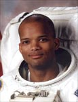

Lyndon B. Johnson Space Center
Houston, Texas 77058
|
National Aeronautics and Space Administration Lyndon B. Johnson Space Center Houston, Texas 77058 |
 |
Biographical Data |
||
Robert L. Curbeam, Jr., (Captain, USN, Ret.)
NASA Astronaut (Former)
PERSONAL DATA: Born March 5, 1962, in Baltimore, Maryland. Two children. He enjoys weightlifting, backpacking and sports.
EDUCATION: Graduated from Woodlawn High School, Baltimore County, Maryland, 1980. Bachelor of science degree in aerospace engineering from the United States Naval Academy, 1984. Master of science degree in aeronautical engineering from the Naval Postgraduate School, 1990. Degree of aeronautical & astronautical engineering from the Naval Postgraduate School, 1991.
ORGANIZATIONS: Member of the U.S. Naval Academy Alumni Association and the Association of Old Crows.
SPECIAL HONORS: Fighter Wing One Radar Intercept Officer of the Year for 1989, U.S. Naval Test Pilot School Best Developmental Thesis (DT-II) Award.
EXPERIENCE: Upon graduation from the U.S. Naval Academy, Curbeam commenced Naval Flight Officer training in 1984. In 1986 he reported to Fighter Squadron 11 (VF-11) and made overseas deployments to the Mediterranean and Caribbean Seas, and the Arctic and Indian Oceans on board the USS Forrestal (CV-59). During his tour in VF-11, he also attended Navy Fighter Weapons School (Topgun). Upon completion of Test Pilot School in December 1991, he reported to the Strike Aircraft Test Directorate where he was the project officer for the F-14A/B Air-to-Ground Weapons Separation Program. In August 1994, he returned to the U.S. Naval Academy as an instructor in the Weapons and Systems Engineering Department.
NASA EXPERIENCE: Selected by NASA in December 1994, Curbeam reported to the Johnson Space Center in March 1995. After completing a year of training and evaluation, he was assigned to the Computer Support Branch in the Astronaut Office. He is a veteran of two space flights, STS-85 in 1997 and STS-98 in 2001, and has logged over 593 hours in space, including over 19 EVA hours during three spacewalks. Curbeam served as a spacecraft communicator (CAPCOM) responsible for relaying all voice communication between Mission Control and crews aboard the Space Shuttle and International Space Station, CAPCOM Branch Chief, and Payloads Group Lead, responsible for representing the crew office in the design, training and operation of on orbit experiments, and Safety Branch Chief for the astronaut office. During the spring of 2002, he served as Deputy Associate Administrator for Safety and Mission Assurance, at NASA Headquarters, Washington, D.C. He also served as Director of Safety, Reliability and Quality Assurance for the Constellation Program, and as Deputy Director of Flight Crew Operations. A veteran of three space flights, Curbeam has logged over 901 hours in space, including 7 EVAs (space walks) totaling 45 hours and 34 minutes. In November 2007 Curbeam retired from the Navy and NASA in order to pursue a career in the private sector.
SPACE FLIGHT EXPERIENCE: STS-85 Discovery (August 7-19, 1997) was a 12-day mission during which the crew deployed and retrieved the CRISTA-SPAS payload, operated the Japanese Manipulator Flight Demonstration (MFD) robotic arm, studied changes in the Earth’s atmosphere and tested technology destined for use on the future International Space Station. The mission was accomplished in 189 Earth orbits, traveling 4.7 million miles in 11 days, 20 hours, 26 minutes, 59 seconds.
STS-98 Atlantis (February 7-20, 2001) continued the task of building and enhancing the International Space Station by delivering the U.S. laboratory module Destiny. The Shuttle spent seven days docked to the station while Destiny was attached. In helping to complete its assembly Curbeam logged over 19 hours EVA hours in 3 space walks. The crew also relocated a docking port, and delivered supplies and equipment to the resident Expedition-1 crew. Mission duration was 12 days, 21 hours, 20 minutes.
STS-116 Discovery (December 9-22, 2006). The seven-member crew on this 12-day mission continued construction of the ISS outpost by adding the P5 spacer truss segment during the first of four spacewalks. The next two spacewalks rewired the station’s power system, preparing it to support the addition of European and Japanese science modules by future shuttle crews. The fourth spacewalk was added to allow the crew to coax and retract a stubborn solar panel to fold up accordion-style into its box. Discovery also delivered a new crew member and more than two tons of equipment and supplies to the station. Almost two tons of items no longer needed on the station returned to Earth with STS-116. Mission duration was 12 days, 20 hours and 45 minutes.
DECEMBER 2007